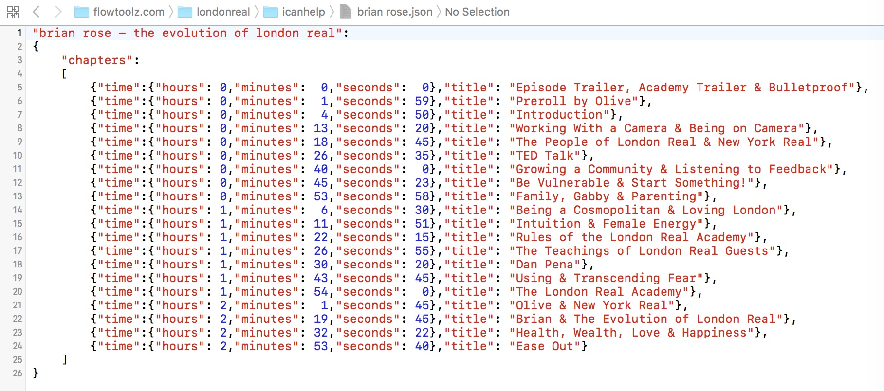

So you want to contribute? THANK YOU, THAT'S INCREDIBLE! Or wait! Maybe it is "credible"... OK, I'll name every contributor in the credits of the app's about page.
If you want to know more about the app, look at the blog. If you want to download and test the app, look here.
At the moment, the most important thing is creating episode chapters. This post explains the challenge. Right now, on September 7, 2016, the latest 28 episodes have no chapters. And I'm sure some old episodes lack chapters as well. If only 5% of academy members would get on it, we would plow through this like Bulletproof Coffee through butter!
Right now, the app reads all chapter information from this online JSON file. I have to put the information into that file in the right format. You can help by creating the information, so that I just have to copy your result into the json file and then validate the formatting.
I know, I know... The professional way of providing chapter data would be to have a backend with a data base and web interface. In that regard we're still in MVP land, but we don't have resources now to ramp it up.
Your workflow would be this:
Create a "txt" or "json" file for your episode(s) of choice, similar to the example file linked in point (2). You can put several episodes in one file, just separate them by commas, as they would appear in the final chapter file linked in point (4). For your own convenience, you ideally name the file ending "json" and use an editor that supports JSON syntax highlighting. This is how the example looks as JSON in Xcode:

Send your file to londonrealchapters@flowtoolz.com. I will verify the result, upload it and update the Google Docs spread sheet.
If you got to here, you're a king among kings! Thank you for your outstanding contribution! Let me know if I can help you with anything!